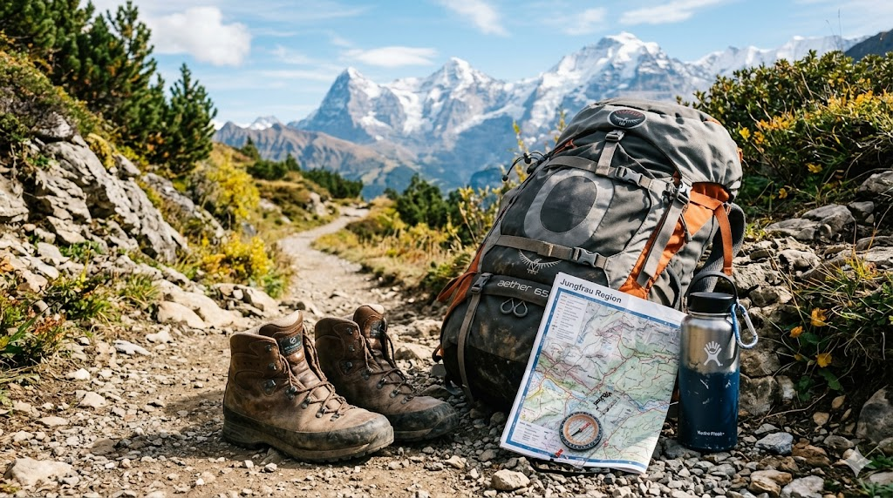

What is Hiking?
Hiking is the activity of walking through natural environments such as forests, mountains, and national parks.
Many hikers enjoy the peace and quiet of trails, scenic views, and discovering wildlife.
Hiking can be a short nature walk or a long journey across mountains and wilderness areas.

AI prompt: photorealistic mountain hiking trail through a forest with sunlight and scenic mountain views.
Who Hikes?
Hiking is enjoyed by people of many different ages and backgrounds.
Families often hike together because it is a healthy outdoor activity.
Many communities also have hiking clubs that organize group hikes.
AI prompt: photorealistic group of friends hiking together on a forest trail during autumn.
Best Times to Hike
The best time to hike often depends on weather and location.
Spring and fall are popular seasons because the temperatures are comfortable.
Summer hikes are also common, especially in higher elevations.
| Season | Benefit |
|---|---|
| Spring | Flowers and mild temperatures |
| Summer | Long daylight hours |
| Fall | Beautiful autumn foliage |

AI prompt: photorealistic hiking trail surrounded by colorful autumn trees.
Best Places to Hike
National parks and forests are among the most popular hiking destinations.
Mountains, coastal cliffs, and scenic valleys all offer unique hiking experiences.
Local parks and trails can also provide excellent hiking opportunities.

AI prompt: photorealistic national park hiking trail with mountains in the background.
How to Start Hiking
Starting hiking is simple and does not require expensive equipment.
Begin with short trails and gradually increase the difficulty.
- Wear comfortable hiking shoes
- Bring water and snacks
- Check weather conditions

AI prompt: photorealistic hiking backpack with boots, map, and water bottle on a trail.
Why I Love Hiking
Hiking allows people to explore nature and enjoy peaceful outdoor environments.
It is also a great way to exercise and relieve stress.
Many hikers enjoy the reward of reaching scenic viewpoints or mountain peaks.
AI prompt: photorealistic sunset view from a mountain hiking trail overlooking a valley.